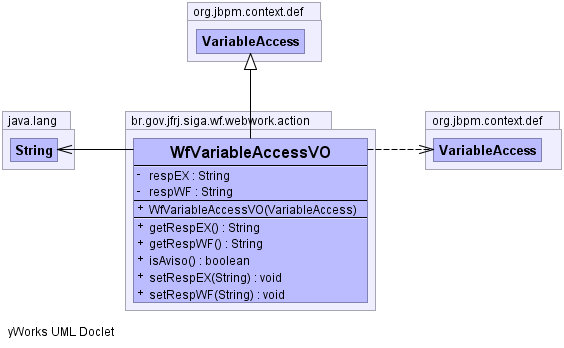

br.gov.jfrj.siga.wf.webwork.action
Class WfVariableAccessVO
java.lang.Object
 org.jbpm.context.def.VariableAccess
br.gov.jfrj.siga.wf.webwork.action.WfVariableAccessVO
org.jbpm.context.def.VariableAccess
br.gov.jfrj.siga.wf.webwork.action.WfVariableAccessVO
- All Implemented Interfaces:
- java.io.Serializable
public class WfVariableAccessVO
- extends org.jbpm.context.def.VariableAccess
Classe que repesenta um View Object (Objeto Visão, ou seja, objeto que será
usado na exibição da interface do usuário) de uma variável presente em uma
tarefa.
- See Also:
- Serialized Form
-
-

|
Field Summary |
private java.lang.String |
respEX
|
private java.lang.String |
respWF
|
| Fields inherited from class org.jbpm.context.def.VariableAccess |
access, mappedName, variableName |
| Methods inherited from class org.jbpm.context.def.VariableAccess |
getAccess, getMappedName, getVariableName, isLock, isReadable, isRequired, isWritable |
| Methods inherited from class java.lang.Object |
clone, equals, finalize, getClass, hashCode, notify, notifyAll, toString, wait, wait, wait |
respEX
private java.lang.String respEX
respWF
private java.lang.String respWF
WfVariableAccessVO
public WfVariableAccessVO(org.jbpm.context.def.VariableAccess va)
throws java.lang.IllegalAccessException,
java.lang.reflect.InvocationTargetException
- Throws:
java.lang.IllegalAccessException
java.lang.reflect.InvocationTargetException
isAviso
public boolean isAviso()
getRespEX
public java.lang.String getRespEX()
setRespEX
public void setRespEX(java.lang.String respEX)
getRespWF
public java.lang.String getRespWF()
setRespWF
public void setRespWF(java.lang.String respWF)